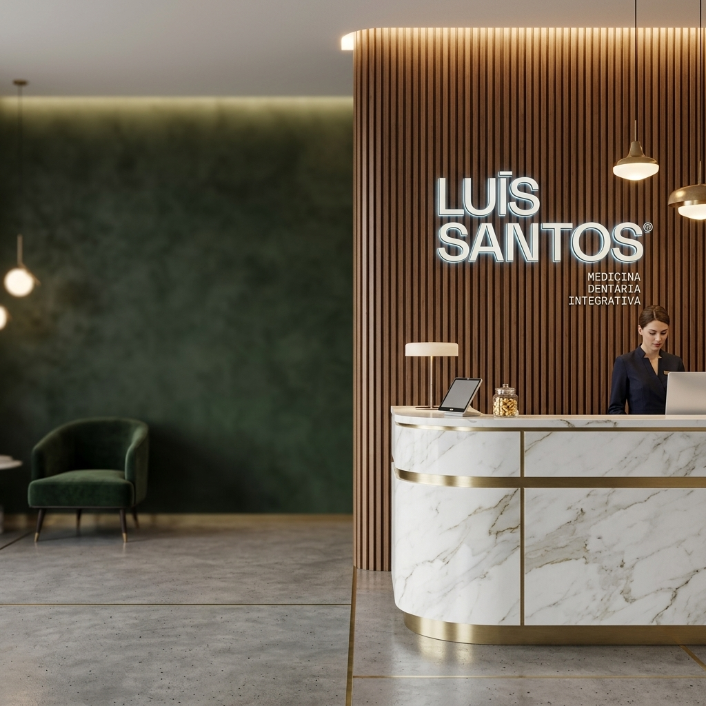

Estamos disponíveis para o acompanhar de forma próxima, clara e personalizada.
Seja para medicina dentária, estética facial ou odontopediatria, a nossa equipa terá todo o gosto em esclarecer as suas dúvidas e orientar o seu agendamento.
T: 935 600 222
E: geral@clinicaluisantos.pt
As marcações são feitas mediante avaliação personalizada, para garantir o tempo necessário a cada paciente. O primeiro passo é sempre ouvir, compreender e orientar — sem pressa.
Agende a sua consulta
Av. João Paulo II, 18 – Loja 2 (R/C Direito)
Vila Real
A clínica está localizada numa zona de fácil acesso. Cada contacto é tratado com atenção, profissionalismo e confidencialidade.